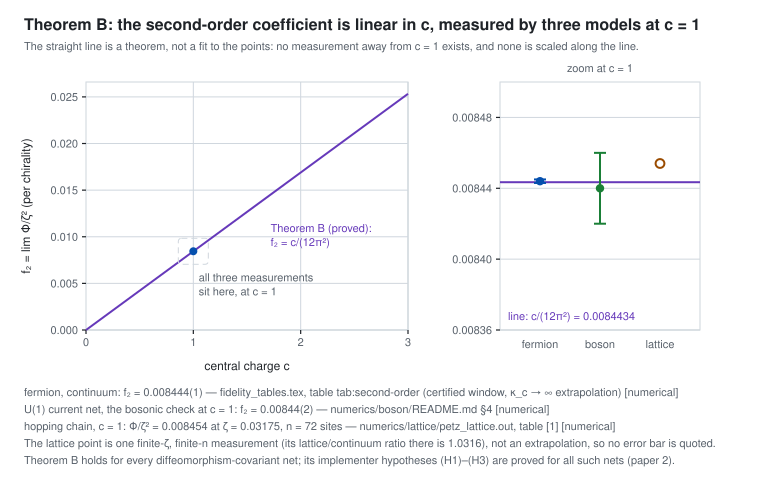

Module 3 — Universality in the central charge
The second-order coefficient of the recovery error is not a property of the free fermion. Theorem B proves it is c/(12π²) for every diffeomorphism-covariant net — a straight line through the origin in the central charge. Slide c below and the coefficient moves along that line. The measurements do not move: all three were made at c = 1, and nothing here is evidence at any other central charge.
For every diffeomorphism-covariant net on S¹ (separable, CDIT axioms, Bisognano–Wichmann, Haag duality, Reeh–Schlieder), −log F = (ζ²/8) gB + o(ζ²), gB = 4 dist(T(gtot)Ω, cl A(I)′saΩ)² = 2c/(3π²), f₂ = gB/8 = c/(12π²). The stress-tensor subspace reduces Δ and J, so the linearity in c is structural: the deformation only ever sees the stress tensor, whose two-point function carries c as an overall factor. The constant in front comes from the fermion.
Where this comes from: claim page · rigor/universality_theorem_B.tex · rigor/referee_universality_theorem_B.tex · universality_normalization.tex
The first-order field gtot has a single jump of its second derivative, so its Carpi–Weiner 3/2-norm is finite; essential self-adjointness follows from Carpi–Weiner Thm 4.4, Stone and a Trotter split, with the scalar phase from Fewster–Hollands. The form bound needs β = 1 and is sharp; the Nelson route and D(L₀)-invariance are closed in the negative. So the hypotheses above are not an extra assumption on the net — they are a theorem about it.
Where this comes from: claim page · rigor/implementation_C11.tex
Three independent models are drawn: the Dirac fermion in the continuum, the U(1) current net, and the half-filled hopping chain. Each has c = 1, and each was computed at c = 1. No measurement at any other central charge exists in this repository, so no point is ever moved along the line when you change c: the line is the theorem, the points are the data, and a point drawn at c = 3 would be a fabrication. What the slider shows is the theorem being evaluated, nothing more.
Where this comes from: the bosonic check · the lattice · numerics/boson/README.md · numerics/lattice/petz_lattice.out

The line, and the one place the data live
At c = 1, where the measurements are
The same axis, magnified by a factor of about a thousand around the theorem's value. The bar through a point is its quoted uncertainty; the lattice point is one finite-ζ, finite-n measurement rather than an extrapolation, so it has none.
Why c can only enter as a factor
The deformation only ever touches the stress tensor, and ⟨T(x)T(y)⟩ = (c/8π²)(x−y−i0)−4 carries c as an overall factor. Its x-space Mellin transform is exactly Ŵ(k) = (c/24π) k(k²+1)/(e2πk−1), which satisfies the KMS relation Ŵ(−k) = e2πk Ŵ(k) and integrates to gB = 2c/(3π²) — the third independent route to the same metric. Change c with the slider above and the whole curve scales; its shape cannot change.
The bosonic check converges to the same number
The U(1) current net is a genuinely different theory with the same central charge: its modular symbol is the Bose factor πκ coth(πκ) rather than the Fermi one. Its coefficients are computed inside a spectral window κc and extrapolated; the ladder below is the window opening.
Two chiralities, and why the rotation angle matters there
For a 2D CFT the rotated Petz maps give −log F(λ) = Φ(z(1+e−πλ)) + Φ(z(1+eπλ)), even in λ with its minimum at λ = 0: for two chiralities the ordinary Petz map is the best member of the rotated family, matching Vardhan–Wei–Zou. For a single chirality the family is monotone instead and the compression endpoint wins. The curves below use the small-z law Φ(ζ) = f₂ζ², so they are drawn in units of f₂z² and are independent of c.
Claims this module carries
| claim | status |
|---|---|
| Theorem B: f₂ = c/(12π²) for every diffeomorphism-covariant net | refereed conditional |
| (H1)–(H3) hold for all such nets | refereed |
| the stress-tensor normalisation chain | proved |
| the exact Mellin transform Ŵ(k) and the invariant formula for gB | proved |
| the two-chirality law for 2D CFTs | proved |
| the bosonic check: the U(1) current net agrees | numerical |